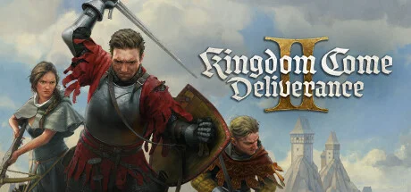
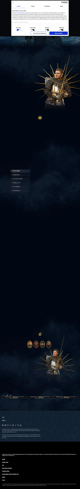
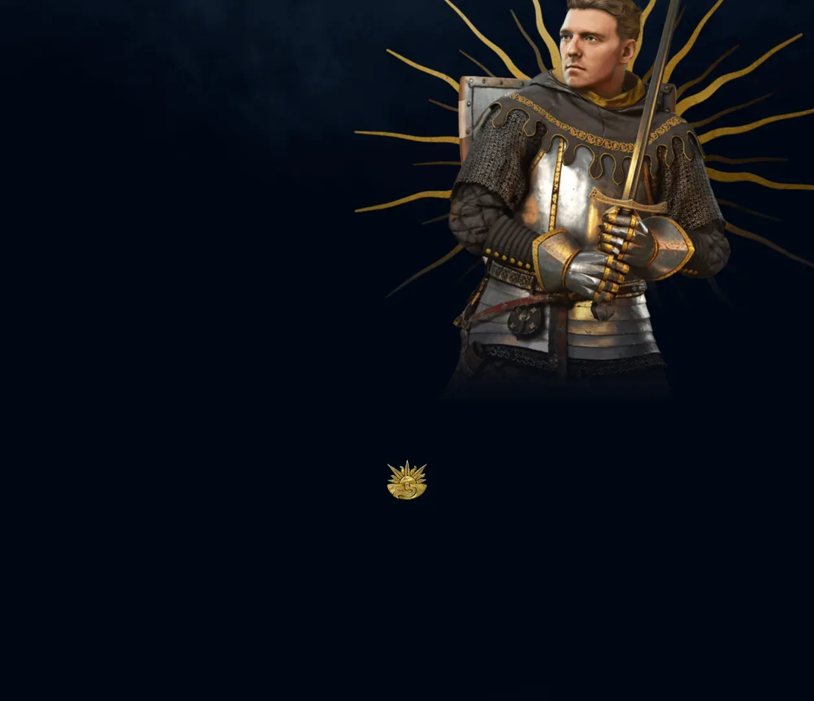
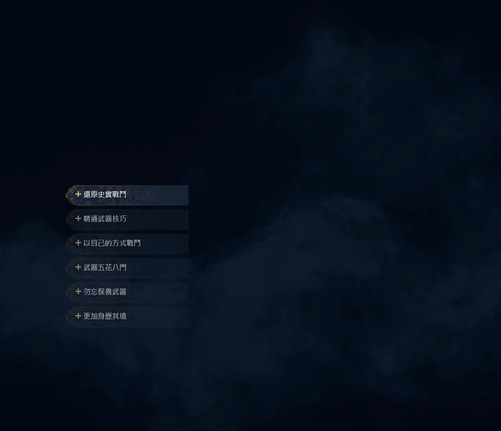
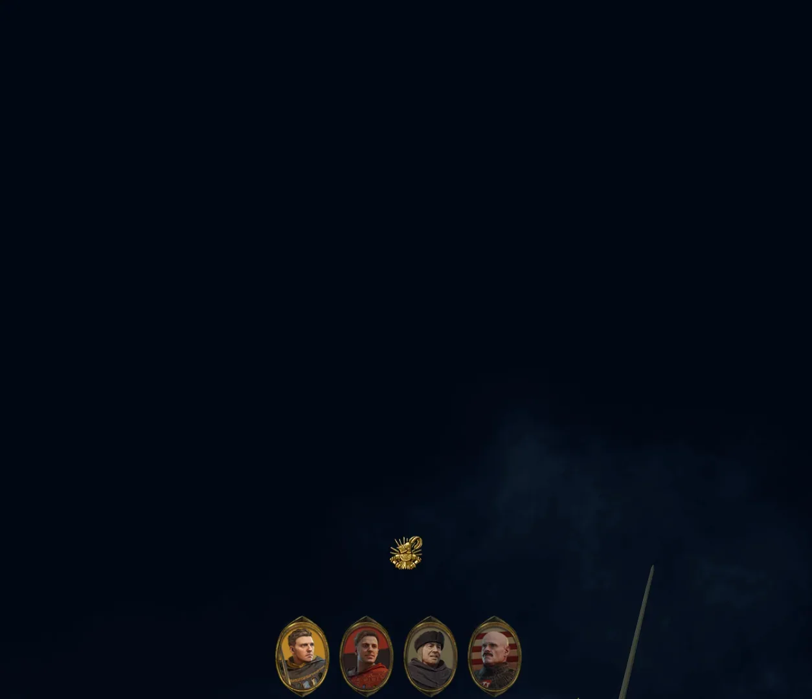
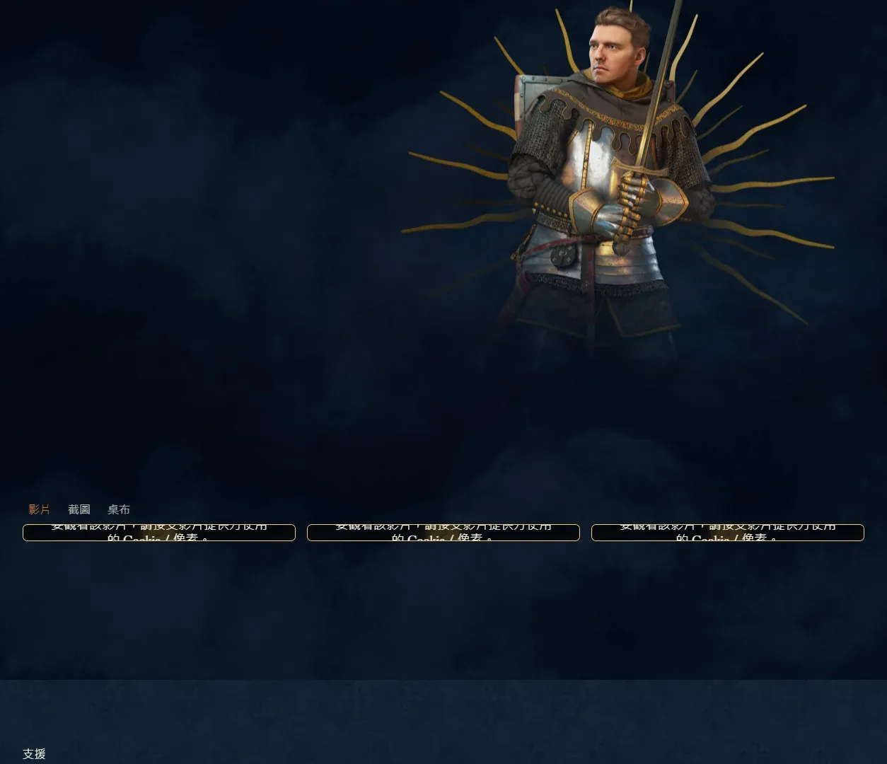
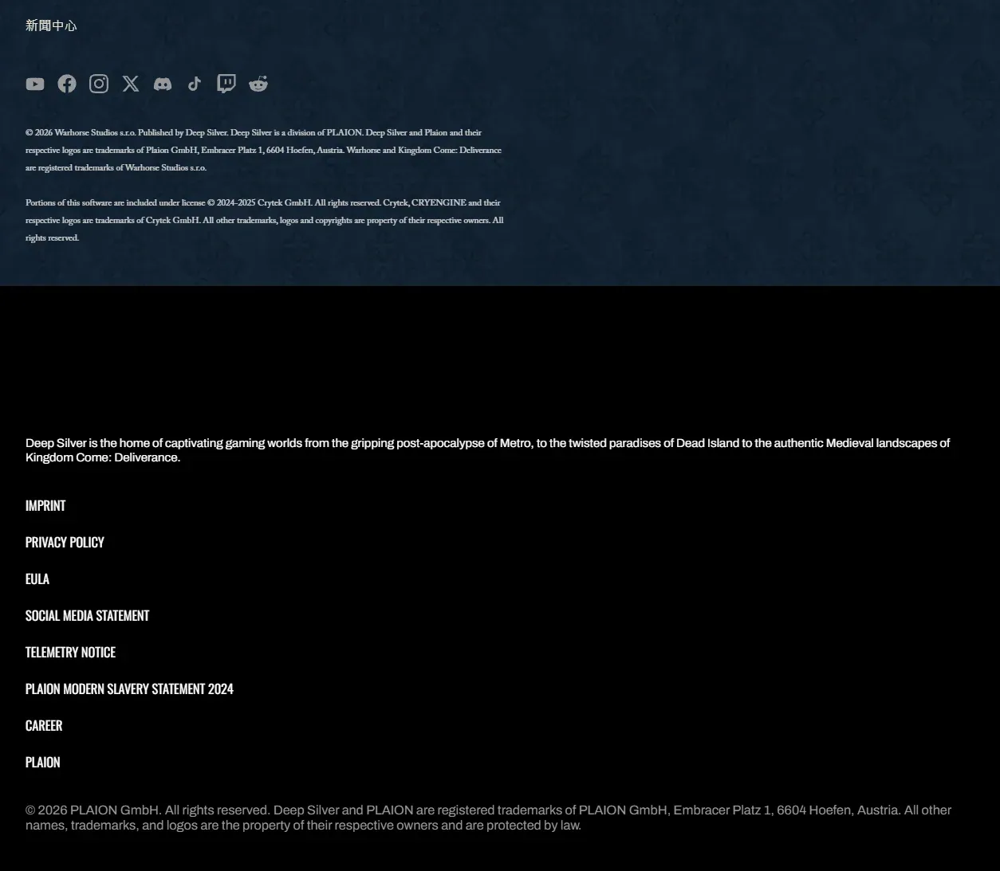

写实中世纪开放世界 RPG 续作，以历史真实性著称。






想象一片1403 年真实中欧大地——今天捷克所在的波西米亚地带，胡斯战争爆发前夕。这里没有魔法、没有龙、没有精灵——你看到的是 Warhorse 用 CryEngine 把祖国土地博物馆级地还原：Trosky 城堡的尖顶塔楼在夕阳下投下漫长阴影、Kuttenberg 银矿城的圣芭芭拉大教堂正在施工中、波西米亚乡间的麦田与橡树林一望无际。锻造铺铁锤砸出真实节奏、十字弓上膛分两段动作、攻城器械按 15 世纪手稿组装、炼金术按真实草药配方煮——历史不是背景板，而是每一帧的肌理。
你是Henry——银匠之子。前作里 Skalitz 村被入侵、家人被杀，你从一个连剑都不会握的少年磨到能在战场上活下来。如今你已是可信赖的随从，被卷入波西米亚国王西吉斯蒙德与其异母兄弟瓦茨拉夫的王位争夺这场真实历史事件。你在 Trosky 封建领地、Kuttenberg 银矿政治、修道院炼金书房之间穿梭。每天你需要洗脸、吃饭、检查装备——这是带着泥土、汗味、铁锈和血腥的 1403 年真实生活。
那次你第一次在 Trosky 城堡石墙前用五方向击剑硬撑过一对一决斗的瞬间，CryEngine 板甲撞击声让你第一次明白为什么剑术教练要喊三十次再举高一寸；那场你在 Kuttenberg 银矿城拐进暗巷被抓现行的桥段——名声系统让整座城镇第二天看你眼神都变了；那次你不得不在两位贵族之间选边、亲手举剑指向昔日朋友的对话节点——历史不会因为你是好人就善待你。这不是关于屠龙的故事，是「一个银匠之子在 1403 年到底能走多远」的故事——铁锤还在你手里，今天先去哪个领主庄园？
照片级写实中世纪 × 博物馆级历史考据，是 Warhorse 把CryEngine 顶级写实环境渲染（光影、植被、布料、金属反射）和1403 年波西米亚的真实历史考据（建筑手稿、武器穿甲表、炼金配方、服装版型）反差融合的混血美学。底色是博物馆考古级的真实——没有任何奇幻夸张；变异在于把日常生活流程做成游戏机制（洗脸、吃饭、磨剑、炼金）。色彩锁定泥土棕 + 锻铁灰 + 修道院羊皮黄三色组合。整体调性介于荷兰小画派和勃鲁盖尔农民画之间。
「真实中世纪 + 历史考据」的视觉线跨越六百年。1559 年勃鲁盖尔的农民画定义了北欧中世纪平民生活视觉。1450 年代哥特晚期手抄本插画奠定中世纪日常视觉档案。1980 年翁贝托·埃科《玫瑰之名》小说定义了博学派历史悬疑文学，被本作叙事承认是直接精神养分。1986 年电影《玫瑰之名》把中世纪修道院氛围影像化。1954 年黑泽明《七武士》定义了硬派写实武打的电影语法（虽日本背景，但泥土+汗味质感同源）。1995 年《勇敢的心》定义中世纪战场电影标杆。2018 年《天国：拯救》（KCD 初代）正式开辟无魔法纯写实中世纪 RPG 品类。2025 年《天国：拯救 2》在 CryEngine 升级版+预算翻倍下登场——五层穿甲方向击剑+Kuttenberg 银矿城+西吉斯蒙德历史事件把博物馆级中世纪 RPG 推到工业级巅峰。
基于体验清单 · 审美偏好 · IP故事三维度综合选出